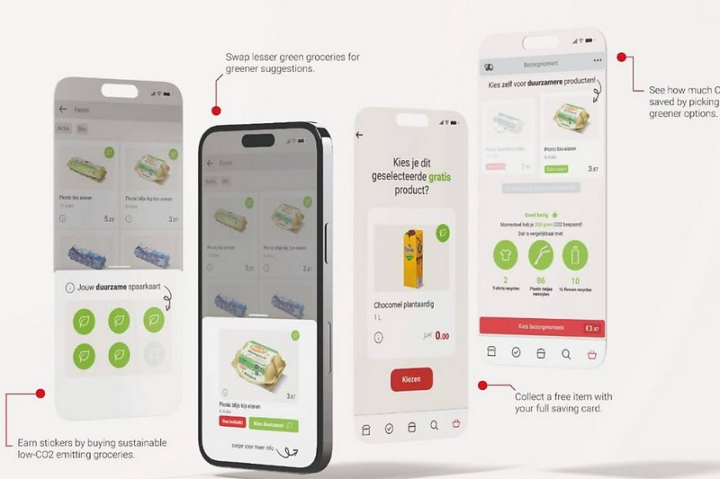
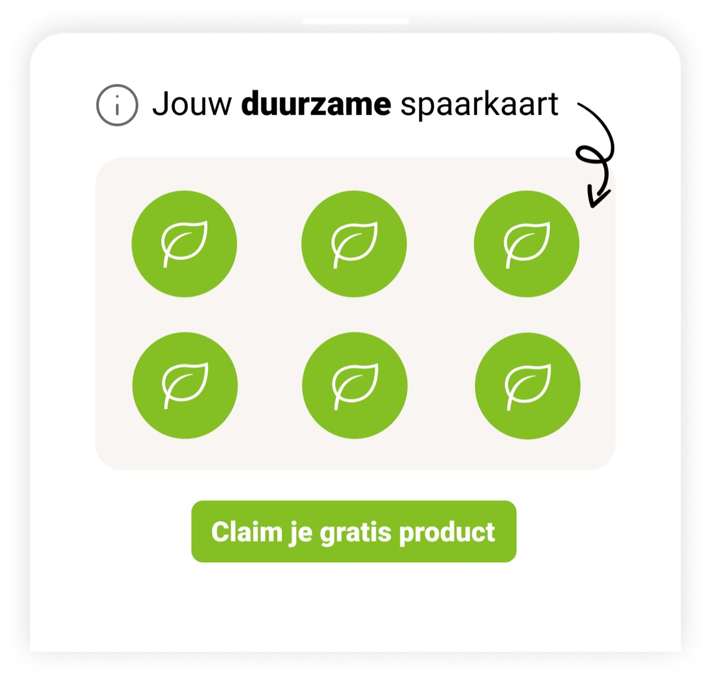
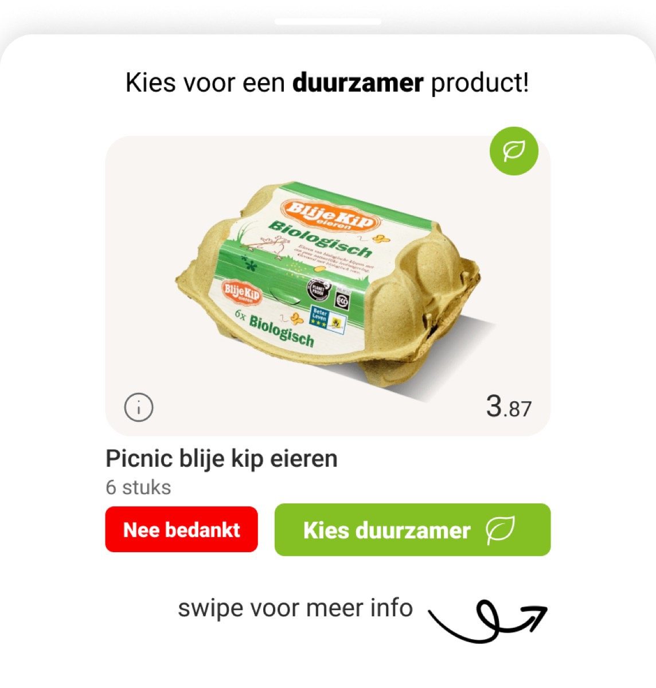
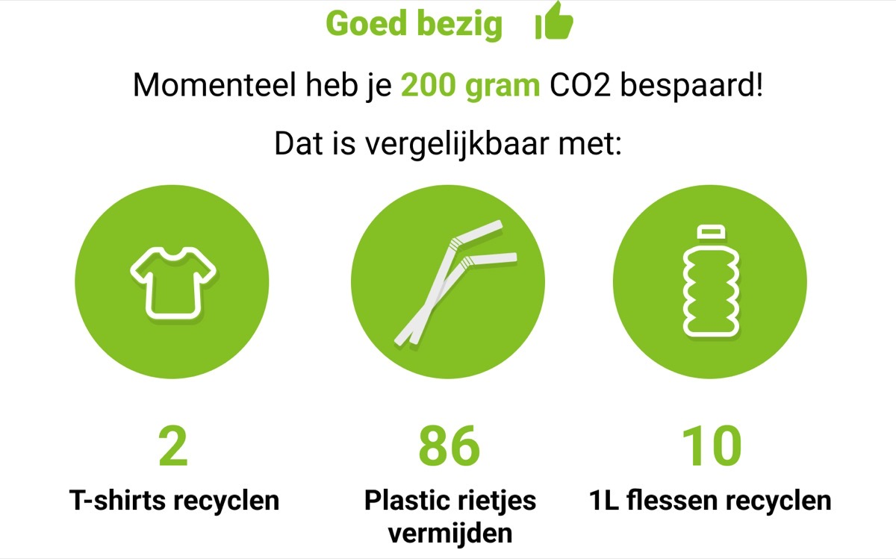

UX Design
Clubleaf × IceMobile
Providing Picnic customers with the option to make more sustainable choices.
My contribution — team of 4
- Did
- Desk research, field research, and usability testing; contributed to the design work.
- Collaborated on
- The three proposed concepts and the Sustainable Saving Card were developed together as a team.
- Already decided
- The brief — designing for Clubleaf × IceMobile within Picnic's app — was set as part of the assignment.

Scenario
We aim to empower customers to make sustainable choices without feeling pressured.
Using tools like infographics, we inform them about sustainability, reduce confusion, and alleviate greenwashing fears by providing transparency about production processes and certifications.
Problem analysis
Picnic's assortment features numerous non-sustainable products, with limited visibility or promotion of sustainable options. Additionally, 43% of consumers do not actively consider product sustainability, highlighting a significant awareness gap.
I led the research behind these findings: desk research and trend analysis, field research through interviews and observations, and later usability testing on the concepts — including A/B and street tests in Rotterdam. One clear signal from that testing: people responded better to simple icons than to video, preferred a familiar vertical-scroll layout, and pushed back on anything that felt like sustainability was being forced on them rather than offered.
Findings
- Club Leaf focuses on several of the United Nations' 17 Sustainable Development Goals in their projects.
- Companies are taking significant steps to reduce their carbon footprint but fail to engage consumers in these efforts.
Club Leaf's own business model buys carbon credits — one credit per ton of CO2 reduced — and helps partner companies build customer loyalty around that through reward mechanics. That model, aimed at a target group of cohabiting 25–35 year-olds, became the constraint we designed against: any concept had to plug into a rewards structure Club Leaf could actually fund.
Proposition
To promote sustainability in grocery shopping, we developed three concepts. "Know Your Groceries" educates consumers about product production through digital tools like videos and illustrations. "Choose Your Emissions" encourages selecting sustainable alternatives with subtle guidance. "Motivation through Extra Information" uses visualizations to show the climate impact of products, inspiring informed choices.
The concept came together under one line: "Save your wallet, save the planet." Sustainability had to pay for itself, not just feel good.
Sustainable Saving Card
The card rewards consumers with stickers for adding sustainable products to their cart. Once the card is full, customers can redeem it for free sustainable products, offsetting higher prices. A clear icon highlights sustainable options, discouraging corporate greenwashing.

Pop-up & CO2 meter
A pop-up suggests sustainable alternatives to customers who haven't chosen any yet, with infographics that build trust and help combat greenwashing.

Users can also track the amount of CO2 or plastic they've saved, with comparisons to everyday items like T-shirts, straws, or bottles — visualizing their impact and motivating more sustainable choices over time.
